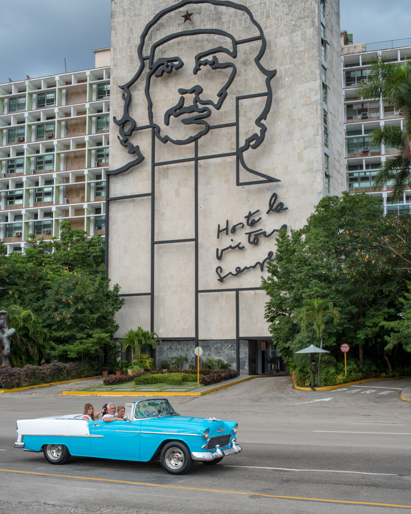
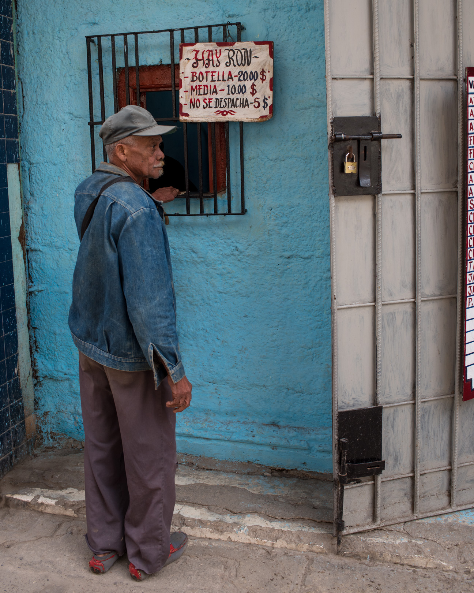
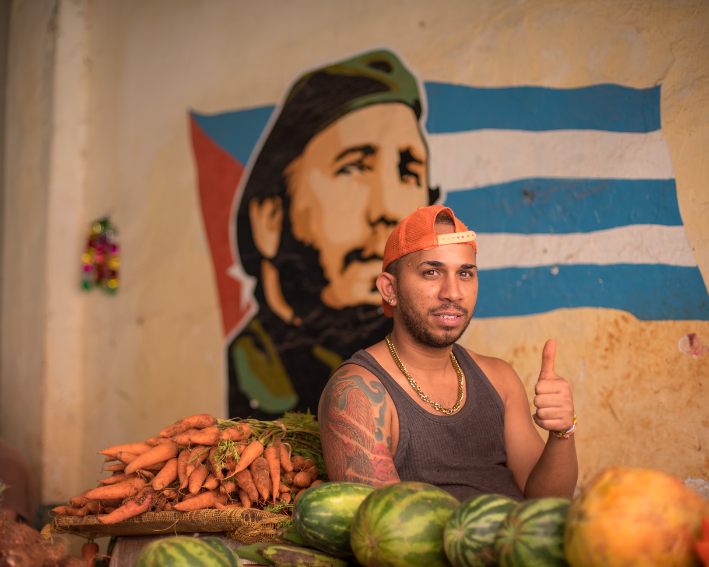
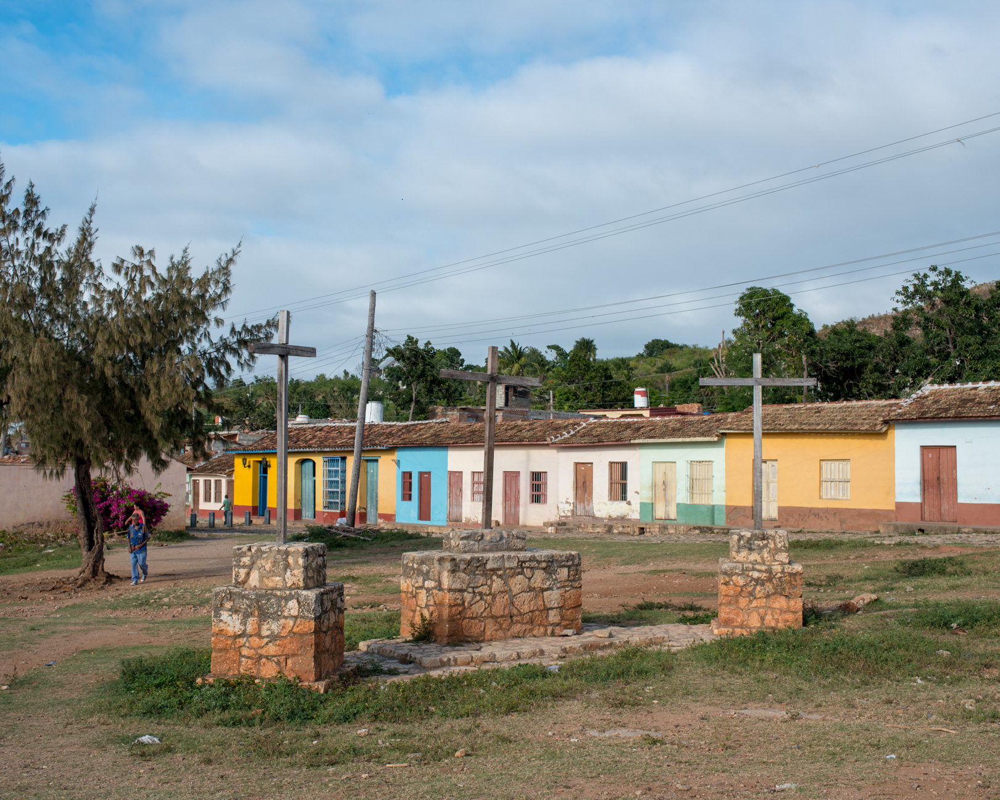

 キューバといえば、常時響き渡る音楽と、町中を走るカラフルなクラシックカー。 キリッと冷たいモヒート。 そんなイメージが連想されるだろうか。 2015年にアメリカとキューバの国交が54年ぶりに回復されたことは記憶に新しい。 今後、間違いなく変わりゆくだろうキューバのいまを見ておきたいと思った私たちは、ハバナに向かった。
到着してみると、一見、イメージ通りの光景が広がる。 広場にはピカピカに磨かれたピンクやターコイズブルーのオープンカーが停車していて、ツアーをしないかと声をかけてくる。 （試しに１時間のハバナ一周ツアーを体験してみたら、街の一部になれた感じがして、思いのほか気持ちがよかった。）
観光客でいっぱいの目抜き通りからちょっと路地に入れば、キューバ人の普通の生活がある。 夕方になると、人々は路上でドミノをしたり、ただ玄関先に腰掛けて語らったり、ステレオで音楽を流して過ごしている。 ちなみに週末は夜遅くまで音楽を大音量でかけているが、滞在中に危険を感じたことはなかった。 たまに通りかかる観光客に無関心な人が多い中、カメラを持ち歩いていると、「写真撮って」とアピールしてくる人もいる。
 そんな住宅街を歩いてみると、観光客が決して足を踏み入れられないような酒場や商店に遭遇する。 一見普通の商店のようだが商品は少なく、よく見ると並んでいる人々は配給手帳を手にしていて、それが配給所だということに気づく。 キューバは社会主義政策の一環で大学院までの教育、医療が無料、 暮らす家も提供され、主要食料は配給制になっている。 ただ、配給の量は十分ではない上に、物資は常に不足している。 私たちの滞在中は卵の配給が滞っていたらしく、参加したツアーのガイドさんは、通りがかった配給所に卵があるのを見かけると、 後で買いに来ようと言っていた。
住宅街にはまた、革命戦士の壁画が溢れている。フィデル・カストロ率いる革命軍が アルゼンチン人アーネスト（チェ）・ゲバラやカミーロ・シエンフエゴスと共に革命を成功させ、 アメリカの傀儡（かいらい）政権を倒したのが1959年。 その後、ソ連の支援を得て社会主義国として現在に至る。 人々は、チェを「アルゼンチン人だけどキューバのために尽くしてくれた、チェ」、カミーロを「フィデルの良き友人」と表現して敬愛していることがわかる。
実はキューバでの食事はそれほど期待していなかったが、雰囲気がおしゃれで美味しいところもあった。 それらはすべて、最近できてきたという観光客用の自営業の店で、外国資本のところも増えてきているらしい。
 政府はソ連崩壊後、特に近年になり経済を自由化していき、Casa particular（民泊） taxi particular,（個人タクシー）、paladar（レストラン）などの自営業の拡大、携帯電話所持、インターネットアクセスの緩和などに取り組んできた。 そして国内経済保護のため、二重貨幣制度を採用している。1USD=1CUC=24CUPという固定相場で、キューバ人が使うCUPと外国人が使うCUCの二種類の通貨がある。 感覚的にはCUCのお店は日本やアメリカの5-8割程度の物価、CUPのお店はさらに1/10程度だろうか。 例えば小さなピザ一枚は3-5CUC, 10CUP程度。観光客もCUPを使うことはできるが、キューバ人のことを考えると使うのがはばかられる。ちなみに平均月収は$32程度で医者の月収は$40−50程度だという。二重貨幣制度の影響で、観光業のタクシードライバー、ツアーガイド、レストラン従業員は医者の10-20倍の収入があることも稀ではないそうだ。海外から送金を受けている人もいて、貧富の差が拡大するという弊害が起きているらしい。 そういうこともあってか、外国人用のレストラン従業員やカサ（民泊）を経営する人、タクシーの運転手などは、英語が堪能な人が多かった。 ほとんど訛りのない英語を話す人もいて驚いた。 たまたまレストランで同席したアメリカ人観光客相手のガイドの青年も、ほぼ完璧な英語を話したが、独学でアメリカのドラマを繰り返し見て英語を学習したという。 学校の英語教育だけでは役に立たないらしい。
 キューバには、ハバナ以外にも魅力的な地方が数多くある。 ハバナから二時間ほど出れば、Varadero（バラデロ）という有名なビーチリゾートや、世界遺産に登録されているVinales（ビニャーレス）というタバコの栽培地で自然景観が美しい地域がある。 私たちは東へ車で三時間半ほどのTrinidad（トリニダ）という町へ出かけた。 18世紀にサトウキビプランテーションで栄えた町で、近隣のロス・インへニオス渓谷と共に世界遺産に登録されている。 スペイン人入植の影響を色濃く残すこの町は、石畳にカラフルな壁の家が連なり、人々の足として馬車や馬が現在も普通に使われている。 車を買えないのだという現実を感じつつも、素朴で美しい佇まいの町はただ散歩するだけで楽しめた。
 トリニダへ向かう途中、遠回りになるからと渋るドライバーに無理を言って、Santa Clara（サンタクララ）という町に寄ってもらった。
革命の戦いにおいて、チェがこの町を陥落させたことで政府軍が降伏したのだ。
ここには、チェの立派な記念館と霊廟がある。霊廟内は炎が焚かれており、厳かな雰囲気である。
チェと革命戦士達に手を合わせたら、チェ好きにはたまらない場所へ向かう。
なんとチェの銅像と手を繋げるスポットがあるのだ。
トリニダへ向かう途中、遠回りになるからと渋るドライバーに無理を言って、Santa Clara（サンタクララ）という町に寄ってもらった。
革命の戦いにおいて、チェがこの町を陥落させたことで政府軍が降伏したのだ。
ここには、チェの立派な記念館と霊廟がある。霊廟内は炎が焚かれており、厳かな雰囲気である。
チェと革命戦士達に手を合わせたら、チェ好きにはたまらない場所へ向かう。
なんとチェの銅像と手を繋げるスポットがあるのだ。
今回何人かのキューバ人と知り合う機会があったが、彼らは貧しいながらも楽しそうに一生懸命暮らしているように見えた。 そこにはキューバ人としての誇りが垣間見られる。
自由経済による観光業の発展に伴い、貧富の差がでてきてしまっているキューバ。 革命後に生まれた世代が社会の中心になってきている中、キューバが変わっていくのは確かだけれど、皆が幸せになれる方向に変わっていってほしい。 これからキューバの動向を見守り続け、数年後にまた戻ってきたい。 空港へ向かう帰り道、カラフルなクラシックカーがとけこむ街並みを目に焼き付けた。